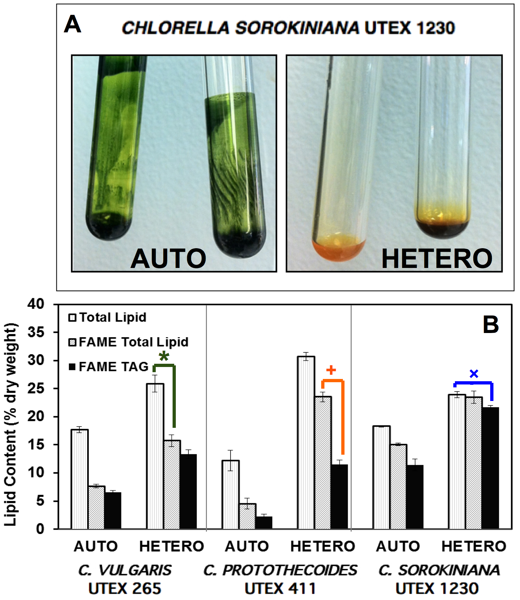

The concept of using microalgae as a feedstock to produce biodiesel is not new, but has recently become very attractive because of algae's high oil yield, rapid growth rate, and reduced need for farm-land (Lehra and Posten, 2009; Rosenberg et al., 2008).The economic feasibility of biodiesel production from microalgae primarily depends on high biomass productivity, high lipid yields, and economical harvesting and downstream processing (Liu et al., 2008). Thus, selection and genetic modification of microalgae for high biomass and lipid yields coupled with optimization of culture conditions to increase lipid productivity are particularly important areas of research.
We have isolated a new strain of microalgae that seems promising for biofuel production. A novel green unicellular microalgal isolate from the freshwater of the Inner Mongolia Province of China and named as CCTCC M209220, grows between pH 6 and 11 and temperatures of 20–35°C with optimal conditions at pH 9 and 30°C. Morphological features and the phylogenetic analysis for the 18S rRNA gene reveal that the isolate is a Chlorella sorokiniana strain. A nitrogen source test reveals that this strain can grow well with nitrate and urea, but not ammonium. The strain can grow heterotrophically with glucose as the carbon source and accumulates lipid content as high as 56% (w/w) dry weight after 7 days in high glucose concentrations compared to 19% lipids achieved in 30 days of photoautotrophic culture. The relative neutral lipid content as a fraction of the total lipid is also much higher in heterotrophic culture as compared to photoautotrophic culture.
Rosenberg JN, Kobayashi N, Barnes A, Noel EA, Betenbaugh MJ, et al. (2014) Comparative Analyses of Three Chlorella Species in Response to Light and Sugar Reveal Distinctive Lipid Accumulation Patterns in the Microalga C. sorokiniana. PLoS ONE 9(4): e92460. http://dx.plos.org/10.1371/journal.pone.0092460
Wan, Min-Xi, Run-Min Wang, Jin-Lan Xia, Julian N. Rosenberg, Zhen-Yuan Nie, Naoko Kobayashi, George A. Oyler, and Michael J. Betenbaugh. "Physiological Evaluation of a New Chlorella Sorokiniana Isolate for its Biomass Production and Lipid Accumulation in Photoautotrophic and Heterotrophic Cultures." Biotechnology and Bioengineering 109, no. 8 (2012): 1958-1964.
© 2014 Johns Hopkins University